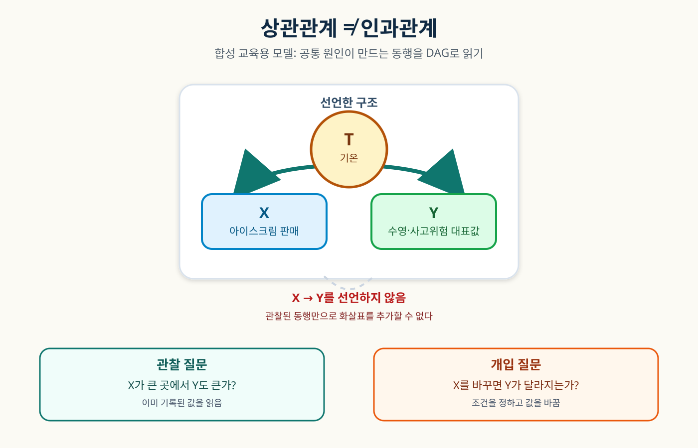

전체 온도를 섞은 관찰
점 색상 = 기온 그룹X 아이스크림 판매선택 T 강조
아이스크림 판매량과 수영·사고위험 대표값이 함께 움직여도, 공통 원인을 먼저 확인해야 합니다.
실제 기온·실제 인구·실제 사고 자료가 아닙니다.

화살표는 이 합성 모델이 선언한 방향입니다. 데이터만으로 참이라고 증명한 구조가 아닙니다.
확인 질문: 기온을 22도로 고정해도 X→Y를 말할 수 있을까요? 이 사례에서는 아니요.
자막은 영상과 함께 로드됩니다.